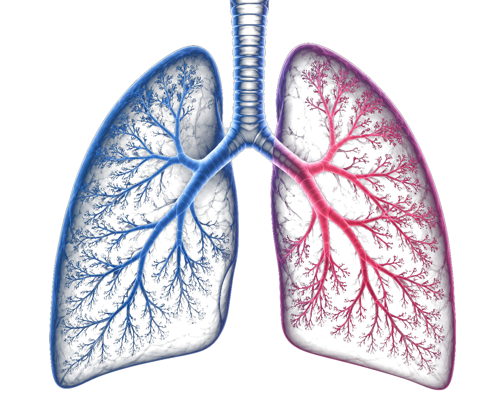
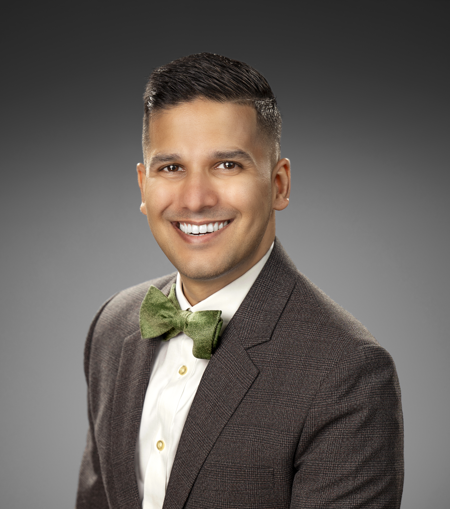

The Bose FABLE Lab at Baylor College of Medicine and Texas Children's Hospital
We work across the laboratory and the operating room to understand how mechanical force drives fetal lung development, why that development goes wrong in congenital diaphragmatic hernia, and how fetal intervention can change the outcome.

The developing lung grows on a fixed schedule. Physical forces around the lung such as in congenital diaphragmatic hernia can interrupt normal development. Our lab studies how force and form are linked, and where an intervention can move that development back toward normal.
We follow how alveolar epithelial cells react to mechanical stretch to alter their developmental fate. We are interested in specific mechanoreceptors and how they transcriptionally regulate processes that contribute to cell fate.
We use fetal tracheal occlusion, an existing fetal therapy, as a model of force modulation. We are interested in the application of mechanical alveolar distension as a dosable stimulus that can affect how different babies with similar anatomy can respond to the same operation in different ways.
We test these ideas in human neonatal lung cells held under controlled stretch, in precision-cut lung slices that keep the tissue's architecture intact, and in spatial multiomic assessment of lung tissue.
Peer-reviewed work on in utero gene and base editing, lipid-nanoparticle delivery to the fetus, fetal surgery, and the ethics of intervening before birth.
Featured workIn utero split AAV9 adenine base editing corrects the multi-organ pathology in a lethal lysosomal storage disease. Bose SK, White BM, Kashyap MV, et al. Nature Communications, 12(1), 1–16 (2021).
In utero delivery of targeted ionizable lipid nanoparticles facilitates in vivo gene editing of hematopoietic stem cells. Palanki R, Riley JS, Bose SK, et al. Proceedings of the National Academy of Sciences, 121(32), e2400783121 (2024).
In utero hematopoietic cell transplantation leads to sustained engraftment in a mouse model of Fanconi anemia. Dave A, Liu S, Riley JS, Bose SK, et al. Blood Advances, 8(3), 624–628 (2024).
Intra-abdominal bowel dilation in experimental gastroschisis is associated with a modifiable transcriptomic program of intestinal dysfunction. Guerra ME, Arai T, Joyeux L, Baxter C, Bose S, et al. Annals of Surgery.
Ionizable lipid nanoparticles for therapeutic base editing of congenital brain disease. Palanki R, Bose SK, Dave A, et al. ACS Nano, 17(14), 13594–13610 (2023).
Prenatally diagnosed large lung lesions: timing of resection and perinatal outcomes. Bose SK, Stratigis JD, Ahn N, et al. Journal of Pediatric Surgery, 58(12), 2384–2390 (2023).
Fetal allotransplant recipients are resistant to graft-versus-host disease. Riley JS, McClain LE, Stratigis JD, Coons BC, Bose SK, et al. Experimental Hematology, 118, 31–39 (2023).
Ethics considerations regarding artificial womb technology for the fetonate. De Bie F, Kim SD, Bose SK, et al. American Journal of Bioethics, 23(5), 67–78 (2023).
Foetal genome editing. Bose SK, Kennedy K, Peranteau W. Current Opinion in Obstetrics and Gynecology, 35(2), 134–139 (2023).
Comment on: Premature delivery in the domestic sow in response to in utero delivery of AAV9 to fetal piglets. Dave A, Berkowitz C, Luks V, White B, Palanki R, Carpenter M, Bose S, et al. Gene Therapy, 30(3–4), 232–235 (2023).
Ionizable lipid nanoparticles for in utero mRNA delivery. Riley RS, Kashyap MV, Billingsley MM, White B, Bose SK, et al. Science Advances, 7(3) (2021).
Amniotic fluid stabilized lipid nanoparticles for in utero intra-amniotic mRNA delivery. Swingle KL, Billingsley MM, Bose SK, et al. Journal of Controlled Release, 341, 616–633 (2021).
In utero gene therapy: progress and challenges. Bose SK, Menon P, Peranteau W. Trends in Molecular Medicine, 27(8), 728–730 (2021).
If you have just learned that your baby has a diaphragmatic hernia, you are probably frightened and trying to understand what comes next. These guides walk the whole journey in plain language, from the first scan through delivery, surgery, and life after the NICU, and they are written by a surgeon who does this work. They are here to help you understand what you are hearing, and they do not replace the team caring for you.

Sourav is a pediatric surgeon and surgeon-scientist who directs the Bose FABLE Lab. He is an Assistant Professor of Surgery at Baylor College of Medicine and a pediatric surgeon at Texas Children's Hospital, affiliated with the Texas Children's Fetal Center.
His program runs across the operating room and the bench, centered on how the developing lung senses mechanical force and on how fetal interventions such as tracheal occlusion can be understood well enough to be improved.
He trained in general surgery at Brigham and Women's Hospital, completed a fetal research fellowship at the Children's Hospital of Philadelphia Center for Fetal Research, and finished his pediatric surgery fellowship at Texas Children's Hospital. He earned his MD from the Perelman School of Medicine, an MBA from the Wharton School, and an MSc from the London School of Hygiene and Tropical Medicine, and as an undergraduate he studied in the Vagelos Program in Life Sciences and Management at the University of Pennsylvania.
For questions about the lab, collaborations, or trainee positions in fetal lung biology and mechanobiology.
If your care team has raised a fetal consultation, ask them for a referral to a fetal care center. The information on this site is educational and is not medical advice.